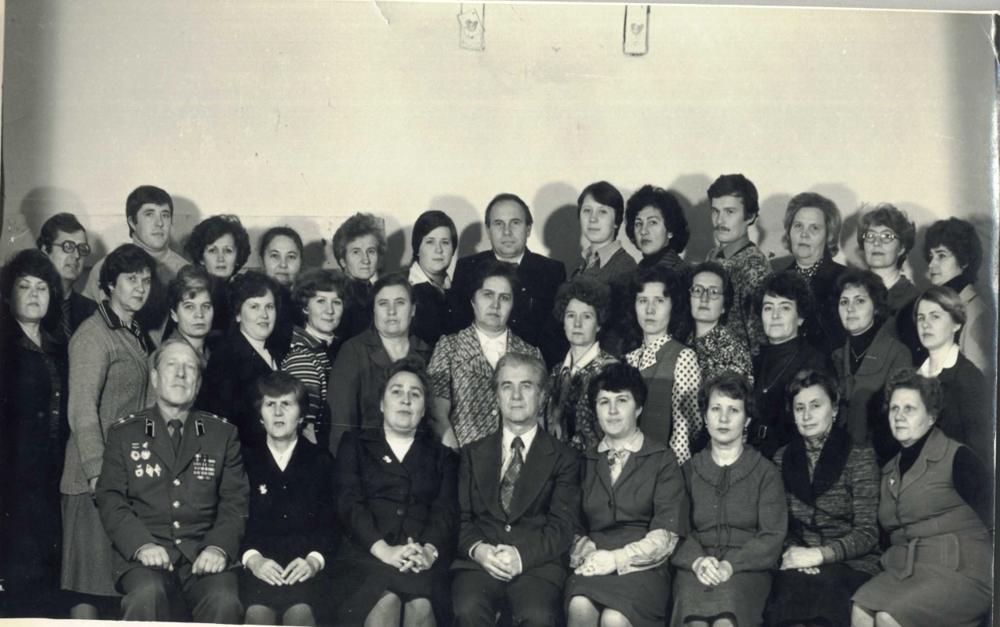
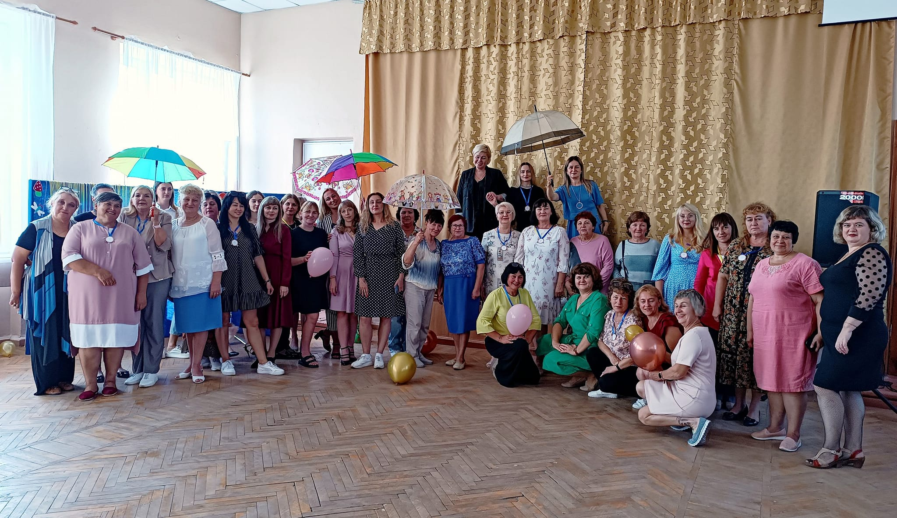

м. Світловодськ, Кіровоградська область
У різні роки навчально-виховну та методичну роботу організовували:
Шрамко Іван Антонович, Шарапова Любов Іларіонівна, Іванова Раїса Іванівна, Крокосенко Катерина Олександрівна, Глінкіна Надія Антонівна, Діхтяренко Любов Іванівна, Оправхата Валентина Микитівна, Лінецька Тетяна Іванівна, Куріщенко Віра Дмитрівна, Полтавець Олена Володимирівна, Тихолиз Лілія Вікторівна, Чиртік Любов Іванівна, Карасьова Вікторія Михайлівна, Плітко Валентина Лаврентіївна, Апанасенко Тетяна Леонідівна, Тумакова Людмила Леонідівна, Сачевська Лариса Романівна, Донець Ірина Олександрівна, Ніколаєнко Світлана Василівна, Капшитар Олена Євгеніївна, Клименко Людмила Василівна, Діденко Ольга Віталіївна, Дешевенко Олександра
Васильченко Паша Олександрівна, Коршенко Олександра Анатоліївна, Донченко І. П., Михайловська Г. Н.
Компанієць Є. М., Мілюткіна Н. М., Бобошко Т. О., Тарбаєва О. І., Щербакова О. М.; Кармазін А. Д., Дехтяренко Л. І., Руденко С. П., Юрченко Л. М., Петрова О. П. (вчитель інформатики з початку 90-х рр.).
Іванова Т. П., Лінецька Т. І., Антонова Н. М., Боровик С. В., Масюк О. Г., Ситнік Л. М., Вакуленко О. М., Маховська І. Г., Левашова О. М.
Безверха Н. М., Слюсар Л. М., Голобородько С. В., Опря В. Г., Созінова Л. Г., Доброва І. С., Довженко О. О., Глушич Є. К., Ільченко В. О., Рогова Г. М.
Котляр А. Я., Зайцева В. К., Штурміна Т. В., Крайносвіт Т. М., Кобильська Ольга Юріївна, Пасько Л. А.
Палій Г. І., Бочаров В. В., Ґава Т. Б., Курочкін А. В., Євсєєва-Андросова О. А.; Третяк М. П., Даценко Р. О.; Машукова З. А., Куліш Л. І., Шкурат В. В., Ложченко Н. І.
Дехтярова М. А., Дика К. О., Цингалова А. А., Нечаєва Катерина, Кравченко Світлана Федорівна.

